Stand under the green board at 777 East Olive and look up. Three sevens. Not a casino chip. Not a slot. A brewery that died and came back in the same building the city bought to keep the Tower Theatre from becoming another empty space. Sequoia Brewing. Rust-red arch. Sequoia tree in a gold coin. Doors the color of a VHS clamshell left on a dashboard in July.
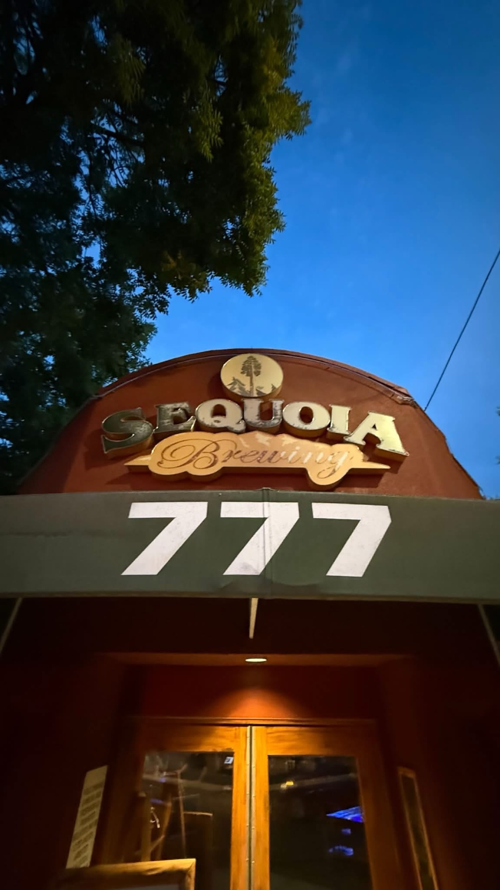
THE HIGH TOWER DISTRICT just crossed 777 members. The same digits as the awning. The same digits the old preachers used for completeness when they wanted a counterweight to 666. You can treat that as coincidence. You can treat it as a dare. This story treats it as a loaded question that has been sitting in a plastic cassette box since 1983, waiting for a neighborhood loud enough to hear the extra verse.
Play the hidden track first
GERALD SCARFE ANIMATION · WHAT SHALL WE DO NOW? · THE WALL FILM, 1982
This is the cut that never lived on the album cassette. It lived on the movie. Kids who only owned the tapes of the record never heard the full sermon. Kids who rented the VHS did. That split is the whole plot.
greyplastic upload of the Scarfe sequence. About three minutes. Flowers, then the wall of junk, then the morph. Watch it before you argue with the rest of this page.
The cassette did not get the rant
Roger Waters wrote a long list. The band recorded it. Then, at mastering, side two of the vinyl was too long. Waters told Tommy Vance in 1979 that the song was "quite long, and this side was too long, and there was too much of it." They kept a short hinge called "Empty Spaces" and threw the full sermon off the record. The lyric sheet on the first LP still printed the words, like a ghost track that only existed on paper. Later CD booklets often dropped even that.
So the cassette generation got the wall without the inventory. The VHS generation got Gerald Scarfe drawing the inventory in ink that looks like it was cut into the paper with a steel nib. Waters, on the DVD commentary, did not give the flower sequence a polite name. He called it the f-ing flowers. Scarfe has laughed in interviews and accepted the charge of misogyny on that devouring bloom. The artist and the bass player both bleed in public. That is not a compliment and it is not an insult. It is the method.
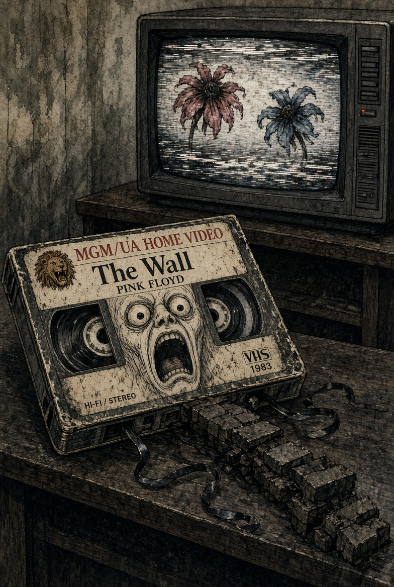
A loaded question is not a question
In the informal logic books they call it the loaded question fallacy. "When did you stop beating your wife?" already contains a crime. "What shall we do now?" already contains a menu. Waters does not ask whether the empty spaces should be filled. He asks which product, vice, appliance, tour, fight, bomb, pet, shrink, or pile of cash will do the filling. The question smuggles the wall into the answer.
What shall we use to fill the empty spaces where waves of hunger roar?
That is the only line you need. After it comes the catalog: a louder guitar, a faster car, a longer night, a fight, a light left on, a bomb, a tour, a disease, a broken home, a drink, a shrink, a diet, a sleeplessness, people kept like pets, dogs trained, rats raced, an attic stuffed with cash, treasure buried, leisure stored, and never a single minute of rest with your back against the thing you built.
THE HIGH TOWER DISTRICT is now large enough to ask the same question of itself without pretending the question is innocent. We can buy another camera. We can post another clip. We can howl at City Hall until the howl becomes wallpaper. We can take to drink. We can go to shrinks. We can keep politicians as pets. Or we can notice that the question already assumed the wall, and refuse the assumption.
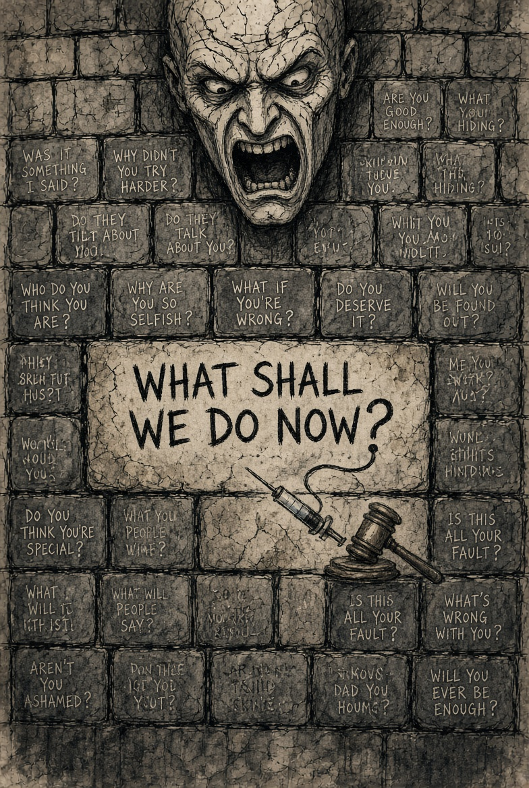
The flowers, then the needle, then the car
Scarfe starts slow. Two flowers court. They become bodies. They become beasts. The female bloom eats the male and lifts off as a pterodactyl. Then the buildings arrive, and the buildings are not buildings. They are a wall of postwar merchandise closing on a sea of faces. Inside the morph, if you stay on the VHS past the first lyric, objects change jobs in a single breath: ice cream, submachine gun, syringe, bass guitar, black car. Waters plays bass. The car is the expensive toy fame buys. The syringe is the part the neighborhood already knows by smell.
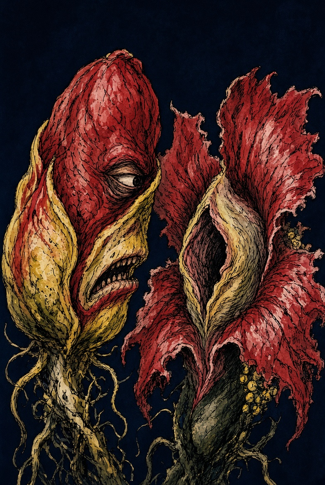
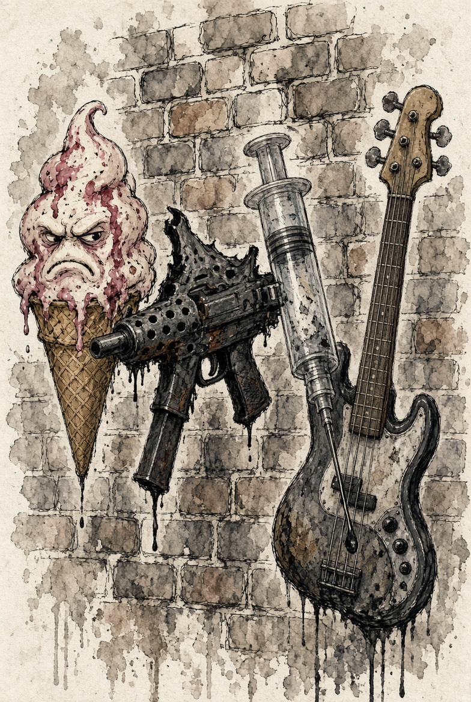
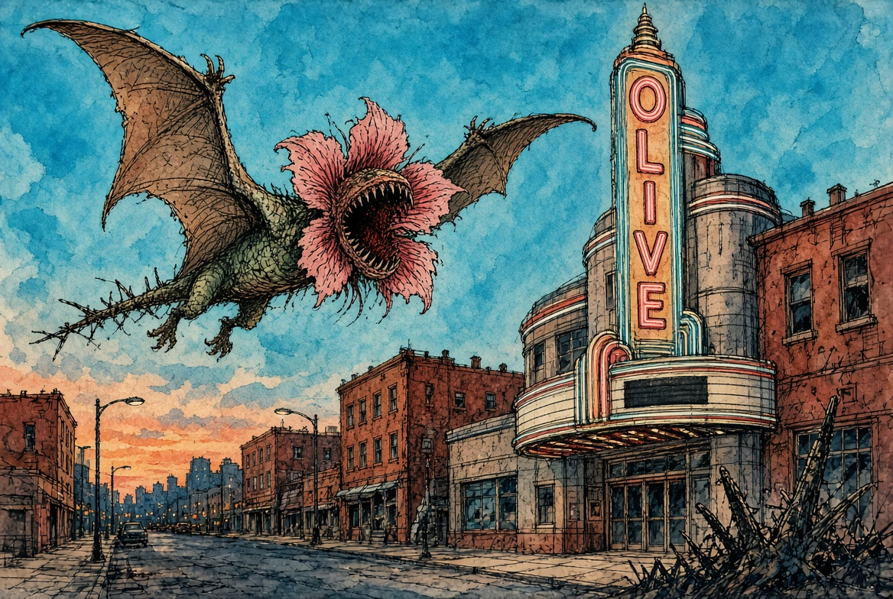
Attic with cash. Addict with 'caine.
Here is the folklore, and it must be labeled as folklore. The printed lyric is "Fill the attic with cash." That is what Waters wrote. That is what the first LP sleeve carried after the song itself was cut. On a tracking-heavy VHS, in a dark room, with the syringe already on screen, a generation heard a different sentence: fill the addict with 'caine. The eye supplied the ear. The animation injected the mondegreen.
That mishearing is not a better lyric. It is a confession about the viewer. In the Tower District the attic and the vein have never been far apart. Cash in the rafters. Powder in the alley. The same empty space, two products. Scarfe drew the needle because Waters listed the hungers. The VHS made the list flesh. Anyone who wants a how-to can leave this page. This is not that. This is the picture of a state that keeps asking what to pour into the hole, and keeps answering with inventory.
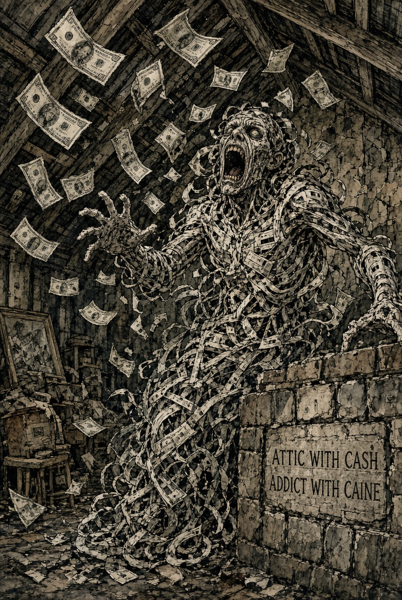
The bleeding heart of the artist
Waters is a difficult man. That is not gossip. That is the public record of lawsuits, bandmates, and speeches. He writes like a man who cannot stop building the wall even while he is screaming at it. Scarfe is a political cartoonist who said a steel nib should cut the paper like a scalpel. Together they made a commercial product that hates commercial products. That is the bleeding-heart trick. Feel everything. Sell the feeling. Leave the syringe on screen and call it a metaphor.
The overlap with this neighborhood is not subtle. The Tower District has always been the city's attic for artists, bars, late shows, and people who do not want the north-Fresno version of a life. It is also the attic where the state stores what it will not enforce. Open use. Open camping. Open contempt for the small law. The artist says look at my wound. The politician says look at my wound. Meanwhile the alley stays the alley.
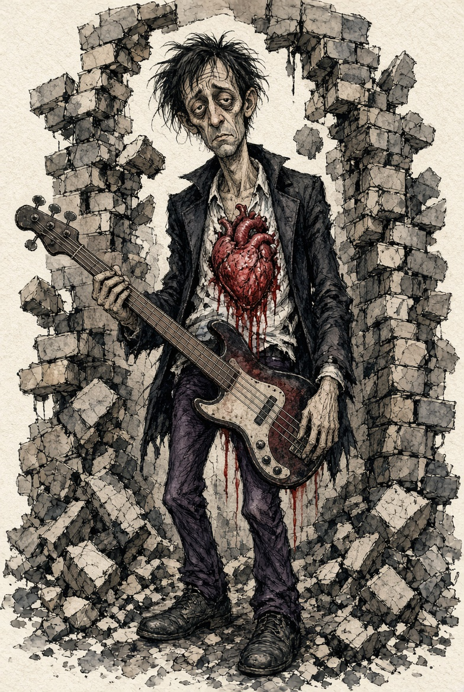
Appeal to emotion, California edition
Another fallacy, sitting in the same pew as the loaded question: appeal to emotion. If you can make the room cry, you do not have to make the room count. Sacramento has become a conservatory of that move. Feel the suffering. Fund the feeling. Do not write the citation. Call the citation violence. Watch the wall of junk grow around a sea of faces that were promised compassion and delivered inventory.
Michael Gates, longtime city attorney of Huntington Beach, built a local prosecutor program in 2017 that treated misdemeanors as if they were real. Downtown crime there dropped on the order of eleven percent by the city's own telling. He is now running for attorney general of California on the claim that the small law is the load-bearing wall. You do not have to join his party to hear the sentence. You only have to walk Olive after dark and decide whether the empty spaces are being filled with care or with product.
Todd Lyons lives in that beach city and sits in this group. The map is not poetry. It is a two-node diagram. Huntington Beach at one end, Tower District at the other, a wall of unenforced space between them, and 777 people now staring at the gap.
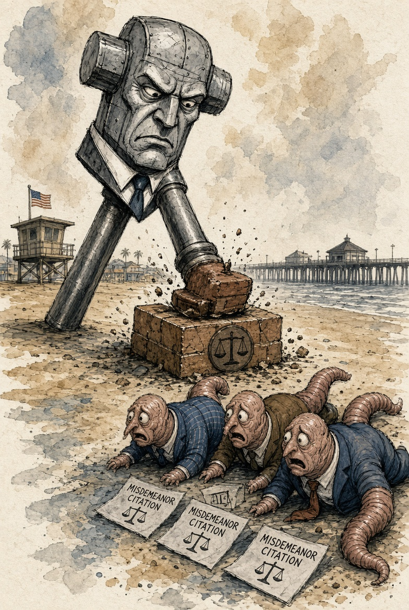
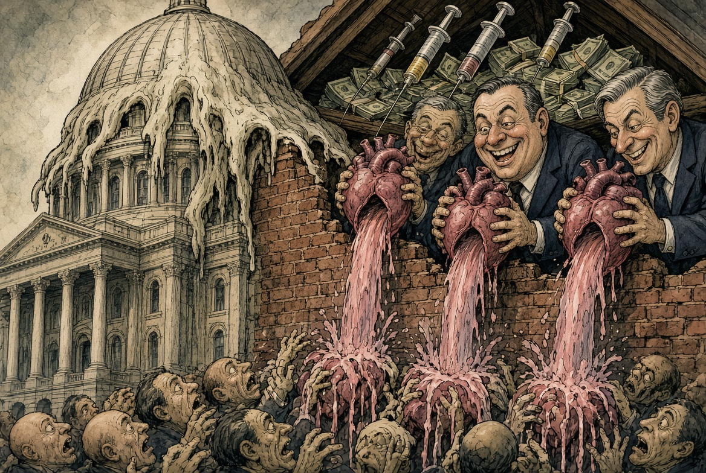
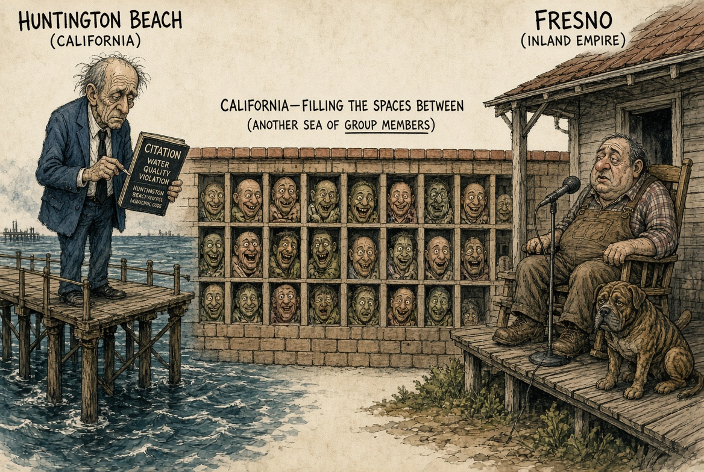
777 is not decoration
In the cheap numerology of the internet, 777 is the lucky slot. In the older Christian reading it is completeness, a triple of the number used for covenant and rest, set against 666 as the parody of that completeness. You can throw that in the trash if you want. The awning will still say 777. The group will still say 777. The building will still sit on Olive across from a theater the city purchased so the last brick would not fall out of the block.
Spiritual implication, neighborhood version: a watch group that large is no longer a chat. It is a choir or a mob. Those are the only two animals that size. A choir sings a true sentence until the room changes. A mob fills empty spaces with whatever product is closest. Waters already listed the products. Scarfe already drew them. The only new fact is the count.
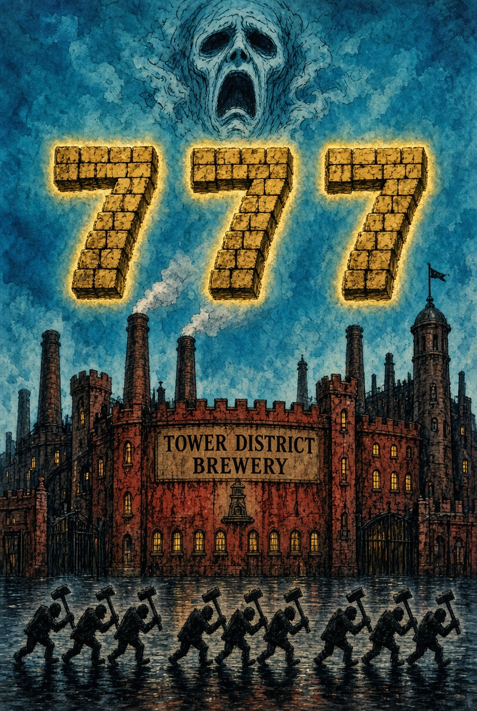
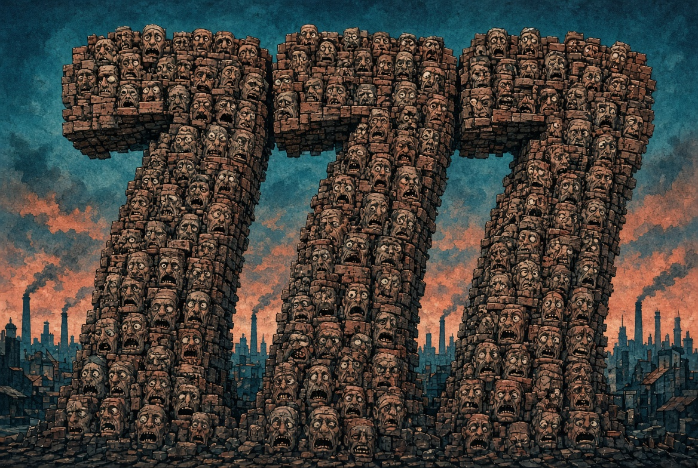
The sea of faces on Olive
Scarfe's consumer wall closes on a crowd until the crowd is only mouths. That is the shot that should scare a Facebook group more than any politician. Seven hundred seventy seven mouths can become a single scream that no longer names a street. The High Tower District was built as a crime-watch and a porch light. If it becomes only fervor, it will have answered Waters' question with the first item on the list: more applause.
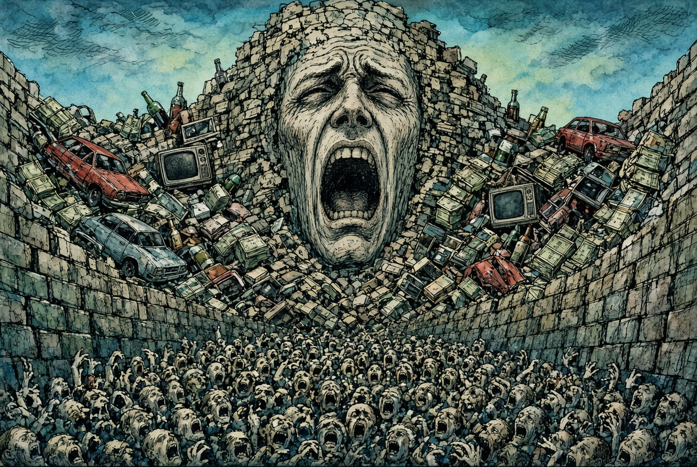
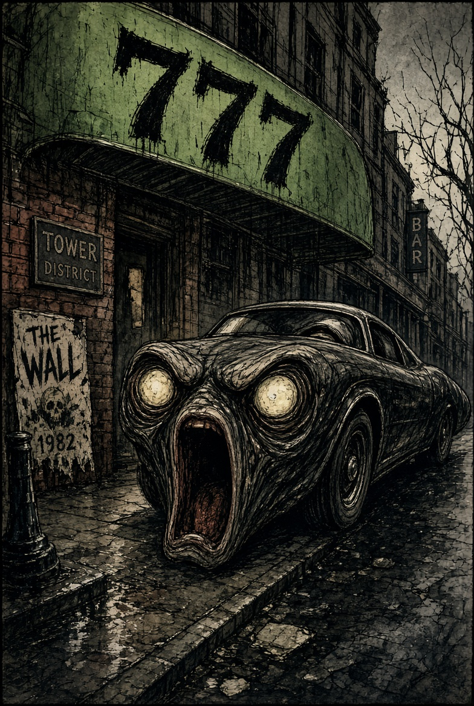
A hyperbolic vision from the courthouse lawn
Some of us have been preaching in open air since the first week of September, small amplifier, same block, same heat. The voice is not always sure where the fervor is coming from. That is the honest part. You can feel a wave and still ask whether the wave is the Spirit or the product. Waters never resolved that for himself. He just kept listing the inventory louder. The Wall ends with a chant to tear the thing down and a quiet walk among the rubble. Most of the audience leaves at the scream.
So here is the over-the-top picture, the one the title promised, the drug-dream grammar without the drug. The Sequoia arch peels open. A face comes out of the gold coin. Olive Avenue lifts like a hinge. Behind it is not a bar but a VHS tracking bar. The flowers copulate over the Tower Theatre. The syringe of the animation hangs above the alley and does not drip, because this page will not give it that satisfaction. Gates' hammer falls on a misdemeanor in Huntington Beach and the sound arrives late, like thunder from another county. Todd hears it first. The porch at 721 hears it second. Seven hundred seventy seven faces turn. Someone asks the question that is not a question.
What shall we do now?
Refuse the menu. That is the only clean answer. Do not buy the louder guitar of another viral clip if the clip does not name a statute. Do not keep people as pets in a comment thread. Do not store leisure while the alley stores men. Do not fill the attic with cash and call it policy. Do not fill the addict with anything and call it compassion. Enforce the small law. Tell the truth without the extra tear. Tear down only the wall you actually built.
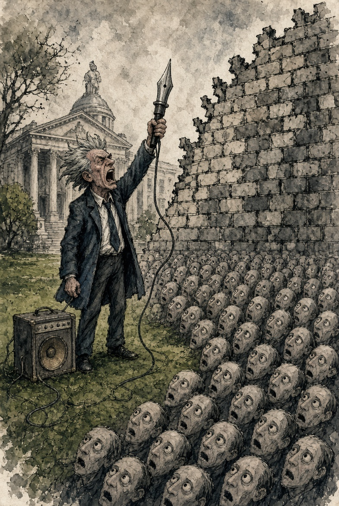
Closing the clamshell
The nostalgia is real. The clunk of the VHS door. The tracking knob. The FBI warning you could not skip. The screaming face on the box. The knowledge that the record store cassette was lying by omission. That lie trained a certain kind of listener: the one who goes looking for the extra verse. THE HIGH TOWER DISTRICT is that listener now, at 777, under an awning that already printed the number.
Waters bled on purpose. Scarfe cut the paper on purpose. Gates filed the small case on purpose. A porch microphone in this zip code is also on purpose. None of that is a sacrament by itself. The sacrament, if there is one, is refusing a question that already sold you the wall.
END OF TAPE · REWIND · 777
Sources and context
- Roger Waters, Tommy Vance interview, 1979, on cutting "What Shall We Do Now?" because side two of the vinyl was too long. Lyrics remained on the original LP sleeve.
- Pink Floyd, The Wall film (Alan Parker, 1982). Animation directed by Gerald Scarfe. Studio recording of the cut song survives in the film soundtrack, not on the original album cassette or standard CD.
- Live restorations: Is There Anybody Out There? The Wall Live 1980-81 (2000); Roger Waters The Wall tours.
- Scarfe interviews on the flower sequence, steel-nib method, and the labor of the animation (People, i News, MediaMikes, and his own accounts of The Wall visuals).
- Lyric as printed: "Fill the attic with cash." The "addict with 'caine" line is a documented-style mondegreen tied to the syringe morph on the VHS, not the official sleeve.
- Sequoia Brewing Co., 777 E Olive Ave, Fresno, CA 93728. Closed early 2025 under prior owners. Reopened Halloween week 2025 under Second Growth Brewing LLC / local partners. City of Fresno purchased the Tower Theatre block in 2022.
- Michael Gates, Huntington Beach city attorney 2014-2025; local Criminal Prosecutor Program begun 2017; later DOJ Civil Rights post in 2025; 2026 candidate for California Attorney General. City statements on downtown crime reduction after the misdemeanor program.
- THE HIGH TOWER DISTRICT group roll crossing 777 members, September 2026. Open-air preaching in Fresno beginning the first week of September 2026.
- Plates 01-15 are original AI derivations in the visual grammar of Gerald Scarfe's Wall animation, made for this story. They are not Scarfe's frames and are not official Pink Floyd art.